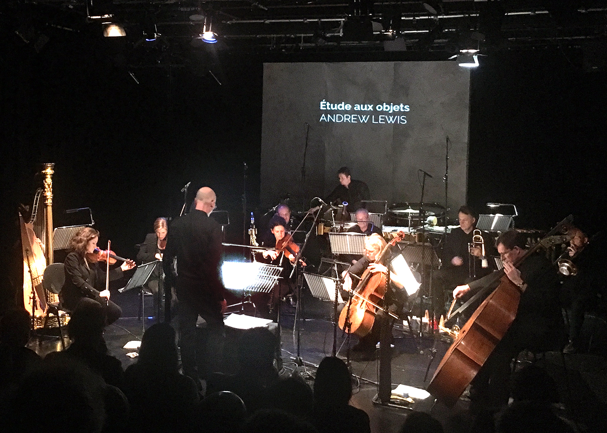

Date of composition: 2018
Overall duration: c. 7 min
Format: Ensemble (alt-fl./picc. cl. bsn. hn. sop-tbn. [or tp.] tbn. perc. hp. 2vln. vla. vlc. cb.)
Premiere: 26 October 2018, Cardiff, Wales (UK)
UPROAR/Michael
Rafferty
10x10, Chapter,
Cardiff

Premiere performance of Étude aux objets with UPROAR and
Michael Rafferty
Programme note: (download as PDF)
"things begin to speak by themselves, as if they were bringing a message from a world unknown to us and outside us."
Pierre Schaeffer
The title of this piece is borrowed from Pierre Schaeffer (1910–1995), who conducted some of the first experiments in making sonic art out of recorded noises. He wanted his listeners to forget what his original sounds were, and instead to hear them as objects of beauty in their own right – pure ‘sound objects’. In doing so, he thought, not only will we hear the sounds in a new way, but we will also start to hear new connections between them that we were not aware of before. In Étude aux objets I wanted to take the same approach. Instead of recorded sounds my ‘objects’ are fragments of instrumental music, but they are still essentially just sounds.
When listening to this piece, we should try to forget everything we know about music, and just listen to the sounds before us. We should listen as if we have never heard any sounds before. If we can do that, new connections can emerge and new, unexpected ‘meaning’ be revealed.
Étude aux objets was commissioned by UPROAR with support from the PRS Foundation. It was first performed at UPROAR’s inaugural concert at Chapter, Cardiff, on 26 October 2018.